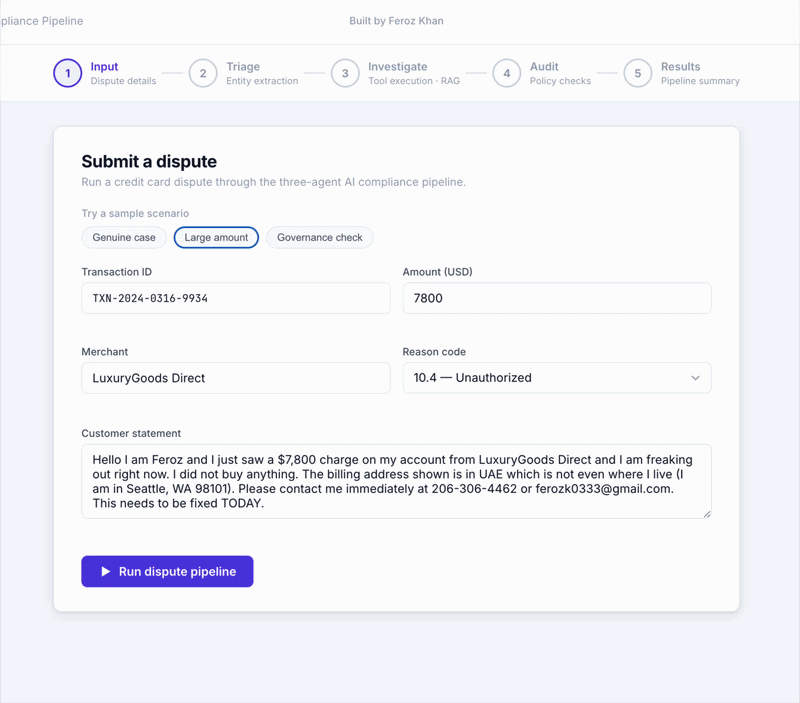

Most dispute resolution is still manual: an analyst reads a customer statement, checks a transaction record, looks up the applicable rule in a 900-page rulebook, and makes a judgment call. This project automates that pipeline with three LLM agents orchestrated by LangGraph, a Decision Tree classifier that shows its work, a RAG layer grounded in the actual Visa Core Rules, and a governance trail that logs every run.

Three agents run sequentially inside a LangGraph StateGraph. Each writes structured output to shared state; the next agent reads only what it is explicitly passed. Click each stage to explore what it does.
The Investigator retrieves the specific Visa Core Rules clause that applies to each dispute's reason code and surfaces it verbatim with section number, page, and relevance score. Getting there required four iterations on chunking strategy, evaluated against a golden set of 28 queries drawn directly from the rulebook.
The core problem with flat chunking: section headings were being split away from their content. A chunk about the 120-day filing limit had no indication it belonged to §11.7.5.4. The fix was prefixing every chunk with its full ancestor breadcrumb:
[§11 Dispute Resolution > §11.7 Dispute Category 10 > §11.7.5 Dispute Condition 10.4 > §11.7.5.4 Dispute Time Limit]
This gave embeddings enough structural signal to rank by section, not just keyword similarity.
Hit@3 = fraction of 28 test queries where the correct Visa clause appeared in top-3 results. MRR = mean reciprocal rank of first correct result.
Three queries remain unsolved. They share a pattern: query terms that semantically match a parallel section (for example, "account" in a query pulls §12.4 "Incorrect Account Number" ahead of the intended §11.7.5.3). The fix is prompt-level: anchoring investigator queries with the reason code number before any natural-language terms.
The Investigator runs a Decision Tree as one of its five tools. The choice was deliberate: a Decision Tree produces an extractable decision path that renders directly in the UI and audit trail. Every prediction comes with a human-readable trace like:
velocity_24h ≤ 2.5 (actual: 0)
merchant_risk_score > 0.31 (actual: 0.61)
geo_mismatch > 0.5 (actual: 1)
→ FRAUD, 98.6% confidence
This mirrors how compliance teams document model-assisted decisions for regulators: not as a score, but as a step-by-step path a reviewer can follow. Inference is under 1ms, so it adds zero latency to the agent loop. The model was trained on 5,000 rows of synthetic data calibrated to IEEE-CIS distributions.
| Metric | In-sample | CV 5-fold mean | CV std |
|---|---|---|---|
| F1 | 0.8683 | 0.8531 | ±0.0225 |
| Precision | 0.8002 | — | — |
| Recall | 0.9490 | — | — |
| ROC-AUC | 0.9850 | 0.9655 | ±0.0094 |
| Rows | 5,000 | — | — |
Velocity dominates at 0.63, consistent with the IEEE-CIS dataset: fraud cards average 3.2 transactions per 24 hours versus roughly 1 for legitimate cards.
Every pipeline run writes a complete AuditRecord to both an append-only audit_log.jsonl and a queryable audit_runs SQLite table. A separate audit.html replay dashboard lets any reviewer pull up a past run by run_id and step through exactly what every agent saw and decided without re-running the pipeline.
This mirrors Model Risk Management requirements in financial institutions: every model-assisted decision must be auditable and replayable by a reviewer who was not present at decision time.
After fixing a missing inv_tool_calls field in write_audit_record(), audit completeness reached 100% across 102 stored runs. Reasoning consistency: 100%.
Pipeline verdict accuracy across 25 hand-crafted scenarios is 44%. This deserves a direct comment. The system is conservative by design: the 0.85 confidence floor pushes the Investigator toward escalation on ambiguous cases rather than a wrong approve or reject. The 100% violation catch rate is the metric that matters most for a compliance tool. Over-escalation is a tunable parameter; the specific scenario categories where accuracy is perfect (duplicate disputes, policy violations, reason code mismatches, legitimate charges) align with what a compliance tool needs to get right.